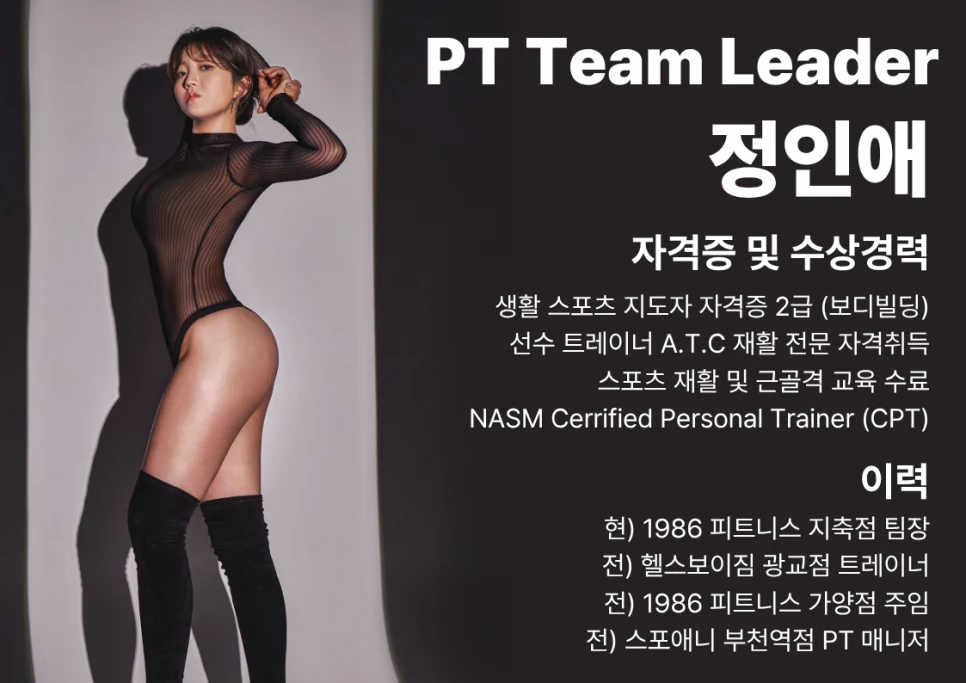
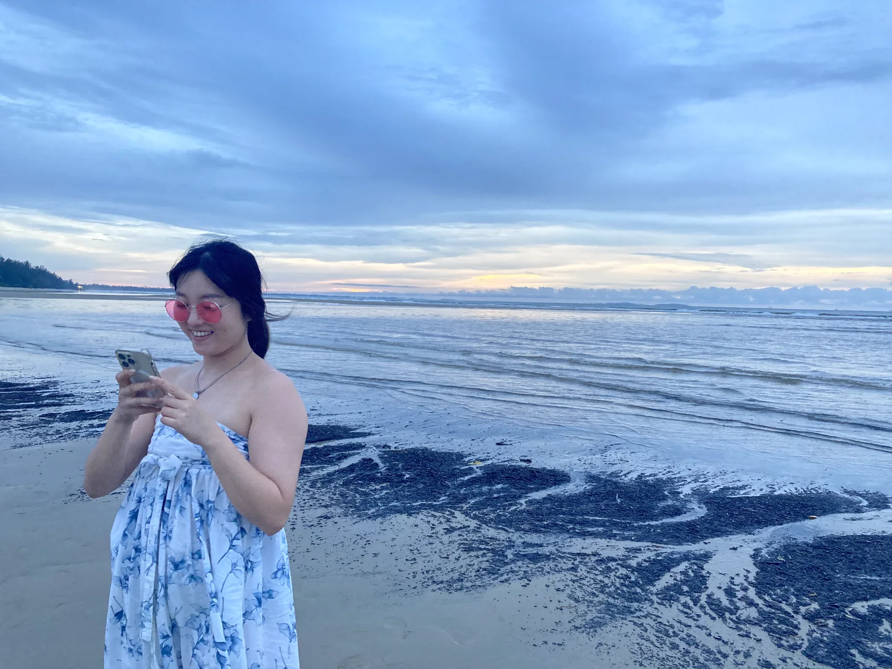
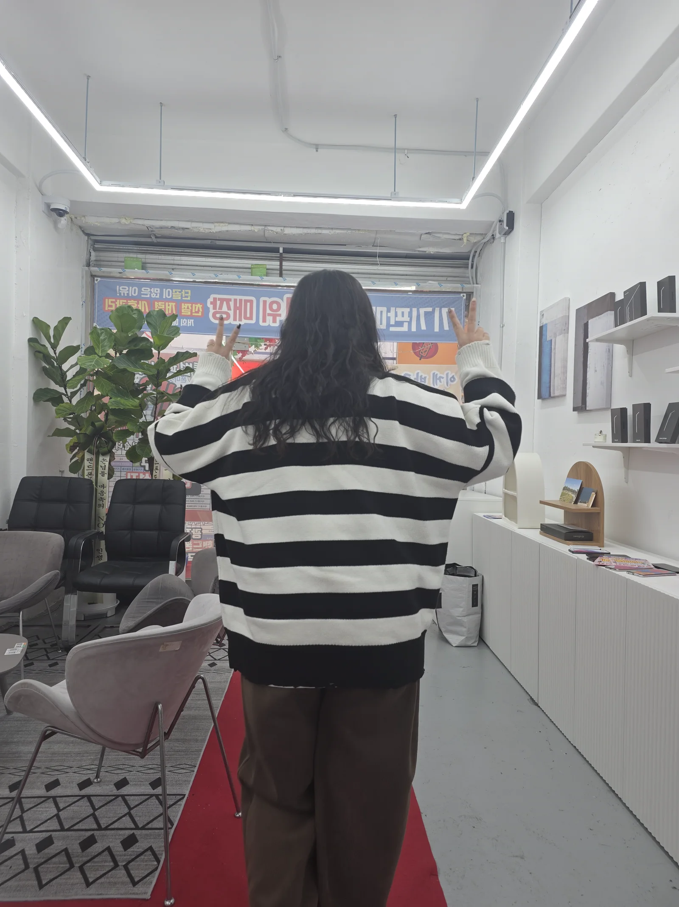
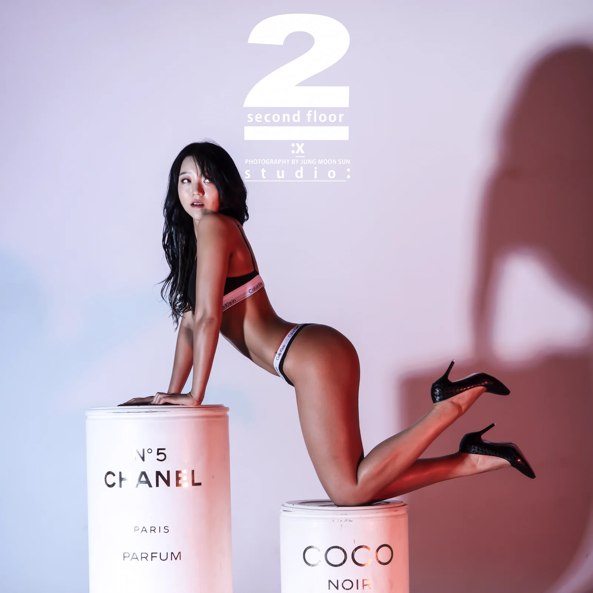
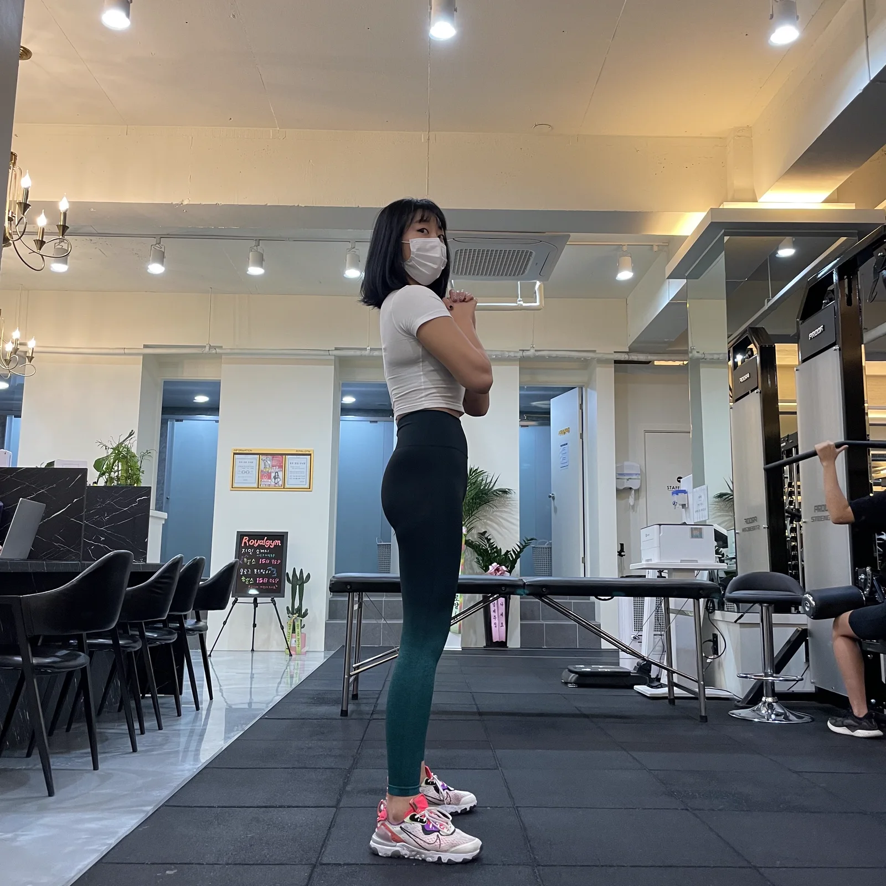

01 · EVALUATE
정확한 평가가 올바른 결과를 만듭니다.
사람마다 체형, 가동범위, 생활 습관이 모두 다릅니다. 평가 없는 운동은 부상의 위험만 높일 뿐입니다. 정밀한 체형 평가와 움직임 분석을 통해 회원님에게 딱 맞춘 '맞춤형 솔루션'을 제공합니다.
1986 FITNESS · JICHUK
JEONG IN AE · PT TEAM LEADER
PERSONAL TRAINING · YOUR OWN STANDARD
운동을 맡긴다는 건, 내 몸의 기준을 함께 세우는 일입니다.
1986피트니스 지축점 · 몸을 이해하는 운동
상담 채널을 준비하고 있습니다.
STARTING POINT

운동을 시작하는 이유는 모두 다릅니다. 통증을 줄이고 싶은 사람, 바디라인을 바꾸고 싶은 사람, 체력을 기르고 싶은 사람도 있습니다.
그래서 누구에게나 같은 반복 루틴이나 횟수만 세는 수업으로는 충분하지 않습니다. 지금의 몸과 움직임을 정확히 이해하고, 안전하게 이어갈 수 있는 방법부터 찾아야 합니다.
내 몸에 맞는 기준이 생길 때 운동은 불안한 숙제가 아니라, 확실한 변화를 향해 나아가는 과정이 됩니다.
TRAINER'S OWN CHANGE
정인애 트레이너가 직접 쌓아 온 약 30kg 감량의 기록입니다. 변화가 막막한 마음부터 유지하는 어려움까지 알기에, 현실적인 속도로 오래 이어지는 방법을 함께 설계합니다.
BEFORE · PAST RECORD


AFTER · BUILT BY HABIT


정인애 트레이너 개인의 변화 경험이며, 변화의 속도와 결과는 개인의 상태와 과정에 따라 달라질 수 있습니다.
COACHING PHILOSOPHY
01 · EVALUATE
사람마다 체형, 가동범위, 생활 습관이 모두 다릅니다. 평가 없는 운동은 부상의 위험만 높일 뿐입니다. 정밀한 체형 평가와 움직임 분석을 통해 회원님에게 딱 맞춘 '맞춤형 솔루션'을 제공합니다.
02 · UNDERSTAND
PT 수업이 끝난 후에도 스스로 내 몸을 제어하고 올바른 자세를 잡을 수 있도록, 동작 하나하나의 이유와 원리를 친절하게 이해시켜 드립니다.
03 · CONTINUE
무작정 굶거나 몸을 갈아 넣는 극단적인 방식은 지속될 수 없습니다. 회원님의 일상에 자연스럽게 녹아드는 영양 가이드와 단계별 트레이닝으로 요요 없는 건강한 변화를 약속합니다.
THE METHOD IN MOTION
영상을 불러오지 못했습니다. 아래 단계 설명은 그대로 확인할 수 있습니다.
A STANDARD FOR LIFE
THE PROMISE
01
수업 시간 외에도 식단 및 개인 운동 루틴을 밀착 관리하며, 매 수업 피드백을 통해 체형 변화와 수행 능력 향상을 눈으로 확인시켜 드립니다.
02
통증 완화, 재활, 체형 교정부터 고강도 근력 향상 및 다이어트까지 수많은 회원님들을 지도해 온 경험을 바탕으로 부상 없이 안전하게 목적지에 다다르도록 돕습니다.
03
어려운 웨이트 트레이닝 용어를 쉬운 언어로 풀어 설명해 드리며, 운동이 처음인 입문자분들도 부담 없이 재미를 붙일 수 있도록 분위기를 이끌어갑니다.
04
단기 다이어트에 그치지 않고, 수업이 종료된 후에도 평생 유지할 수 있는 건강한 식습관과 운동 습관을 만들어 드립니다.
CONSULTATION
상담 채널을 준비하고 있습니다.